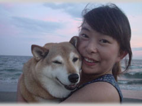

|
最近、デジカメに凝っている。チャコの散歩中に、よその犬を撮って、それをハガキサイズにプリントして遊んでいる。もともと、パソコンは苦手で、人に教わるのも苦手ときているから、解説書を読んでみてもわからず、友達もいないから、訊くことも出来ない。でも、なんとか、プリントするまでは出来るようになった。
僕の持っているデジカメは、レンズが180度回転するソニーのDSC-F55Vなのだが、デジカメすべてがそうなのか、この機種だけがそうなのかよくわからないが、シャッターチャンスがワンテンポ遅れるのが、ちょっと欠点である。動きのあるものを撮ろうとすると、なかなか、タイミングが合わない。ファインダーがないのはいいけれど、太陽の下では液晶画面がよく見えず、たとえば、水平線をまっすぐにして撮ったつもりが、斜めになっていたりして、なかなか、困りものである。
悪口を言ってしまったが、まあ、失敗作はすぐ消せるし、いわゆるフィルムを気にせず、何枚も撮れるし、レンズをくるりと回せば、目線の低いワンちゃんを撮る時など、しゃがまなくてすむし、どういうわけだか、偶然、いい写真が撮れるので、結構、気に入っている。
デジカメは撮影している時よりも、そのあとが楽しい。パソコンの画面上に写真を並べ、ダメなのは捨てて、気に入ったものだけをプリントするわけだが、ちょっと構図を変えたり、引き伸ばしたり、いわゆるトリミングをすると、どうってことない写真が、意外と、いい写真に生まれ変わる場合がある。
今まで、通常のカメラで撮っていた時は、現像も焼き増しも、すべて写真屋さん任せだったわけだが、自分でプリントすると、まあ、錯覚かも知れないけれど、何だか写真がうまくなったような気がする。
それと、やはり、被写体がいいのだ。海と空を背景にワンちゃんしか撮らないからだ。もしくは、ワンちゃんと一緒の飼い主しか撮らないからだ。それにしても、犬と飼い主はそっくりである。顔や表情や体つきや雰囲気や性格まで、時には、笑ってしまうくらい、どっちが犬だかわからないくらい似ている。あれは、何故なのだろう。

出来たハガキを渡すと、いわゆる盗み撮りをしたようなものもあるから、びっくりされて、結構、喜ばれる。写真を渡すのは僕ではなく、うちのが渡す係なのだが、なにしろ、お互い、犬に対し、親ばか同士であるから、どう写っていようと嬉しいのだ。
たったそれだけのことだが、最近、それで、午前中がつぶれてしまい、「俺、こんなことしている暇ないんだよね」などと言いながら、はまっている。鎌倉には、まだまだ出会っていないワンちゃんがたくさんいるのだ。
でも、プリンターの調子が今ひとつ悪い。パソコンの画面上では、とてもキレイなのだが、印刷すると、落ちるのだ。よーく見ると、うすーく横線が入っている。昔のテレビの走査線みたいだ。最初は、こんなものなのかと、あきらめ、まあ、かえって、やぼったくて、いいかなぐらいに思っていたのだが、だんだん、そのうすーいピンクの横線が、ひどくなって来て、気になり出して来た。メーカーに問い合わせると、やはり、おかしいとのこと。インクを変えたり、設定し直したり、いろいろやってみたが、直らない。結局、修理に出してしまった。
数年前、Macintosh Performa 5210を購入した時も、画面が突然、紫色に変色してしまい、しばらく我慢して使っていたのだが、夢にまで紫色が出て来てしまったので、修理に出したことがあった。ちょっといじると、すぐ固まってしまい、一日中格闘して、へとへとになってしまうことが何度もあったので、それ以来、もう他のことは、いっさいせず、ずうっと、ワープロ機能だけしか使わなかったのである。
そのうち、プリンターが壊れ、ならばいっそ、すべてを一新しようと思った。というのは、パソコンの冷却ファンの音がうるさくて、どうにも、我慢が出来なかったからである。
たとえば、深夜、しーんとした部屋で、一人、パソコンに向かいながら、文章を書いていると、始終「ウー」と唸っている音が非常に耳障りになり、その音を消すために、今度は無理やり音楽をかけたり、足の按摩器をゴロゴロ回したりして、余計イライラしていたのであった。
そんな話をすると、「えっ、パソコンから、音、出てますか？」とか「そんなに、気になるほどひどいかなー」と人は言う。うるさいと思っているのは、どうも、僕だけらしいのだ。
しかし、のちのiMacは冷却ファンを付けていない設計ですとパンフレットに書かれてあったし、やはり、メーカーだって、静かな環境を作ろうと努力しているのだ。ところが、今までのPerforma
5210に入っていた文章をiMacに入力出来ないと聞いて、あきれてしまった。デザインは気に入っているのだが、文字が前より見づらくなってしまったみたいだし、シャープの液晶画面なんかにと比べると、はるかに落ちる。
どの機種にしようか。実は、迷うのが大好きなのだが、今回ほど、迷ったことはない。一番気にしている冷却ファンの音を、売り場で確認することが出来ないからである。メーカーに問い合わせても、掃除機やエアコンの室外機のように、数字で表していないから、「あまり、気にならないと思います」と言われても、そもそも気になる基準が人と違うから信用できないのである。求めるものは、無音なのだから、無理な話かも知れない。
結局、判断がつかず、画面の見やすさだけで、ソニーのLX30/BPに決めてしまった。買った後も、これで良かったのだろうかと迷った。力は一気に抜け、楽しみはなくなった。何だか、釣った魚みたいだ。
いよいよ、電源を入れて、がっくりした。冷却ファンの音が一段とするではないか。あれから、数年経って、さぞかし、科学は進歩し、きっと改善され、静かであろうと勝手に想像していたのは大間違いであった。何だか今まで使っていたPerforma
5210より音が大きいくらいである。ディスプレイと本体を離すことが出来るので、音を発している本体を机の下の奥にしまい込むと、やっと前と同じくらいの音量になった。
そして、驚いたことに、音楽ＣＤをセットしたら、なお一層、「ウー」って冷却ファンが回りだし、こりゃ、音楽は聴けたもんじゃないなと思った。こういう不満を持つ人は、他にいないのだろうか。世の中のあらゆる雑音になれて、少しぐらいの雑音は気にならないのだろうか。それとも、やはり、僕がおかしいのだろうか。

何かが便利になると、必ずどこかにしわ寄せが来て、何かが不都合になる。工場の排水、車の排気ガス、ウォークマンの音漏れ。科学は、一見進歩しているようでいて、実は、何も進歩していないのではないだろうか。小林秀雄のセリフが、また聴こえて来る。
「世の中に進歩するものなんてありゃしないよ。すべてのものは変化するだけさ。その変化を君たちが『進歩』と呼びたければ呼んだっていい。しかし、それはただの変化であって、ぼくには進歩なんてものじゃない」。そして、コンピューターについて、「あれは、くわしくなっていくのではなく、細かくなっていくだけなんです」と語っていた。
写真は、撮るのが好きで、といっても、撮るものはなく、せいぜい、老いた妻や、のら猫ぐらいだけなのだが、つい、カメラが欲しくなる。でも、大きいのは持つのが恥ずかしいから、ポケットに入るくらいの小型のカメラが好きだ。パソコンと同じく、充分使いこなせるわけでも、撮るのが上手なわけでもないのに、どうして、カメラが欲しくなるのだろう。万が一、恋人でも出来たら、道具だけは揃えておこうということなのだろうか。
写真は、撮るのも、撮られるのも、その行為自体が、ちょっと緊張を生む。だから、今まで、見知らぬ人にカメラを向けるなんて、僕はまず出来なかったけれど、チャコと散歩するようになって、名も知らぬワンちゃんと、どういう人なのかも知らぬ飼い主さんだけには、自然とカメラを向けられるようになった。まだ、もう一歩、踏み込めない時があるが、犬の方が寄って来る。そして犬は、よく撮られようなんて思っていないのが、いい。
写真は、写す者と写されるものの気持ちが写ってしまう。いい写真は、機種ではない。腕でもない。やはり、何でもそうだけれど、素直な気持ちと愛情だ。ぶれていても、粒子が荒れていても、そう、多少、横線が入っていたって、いい写真はある。
荒木経惟『天才アラーキー写真ノ方法』（集英社新書）にこんな言葉があった。「画面上にピントを合わせるっていう気持ちじゃダメなんだよ。そんときの気持ちとか心、そんときのモノやコトにピントを合わせるっつうことが大切なのよ。」
|